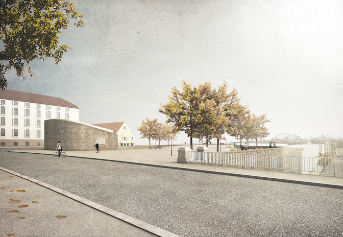

28.02.2017 BASTION ST-ANTOINE GENF, 5. Preis
NYX architectes GmbH gewinnt den 5. Preis für den offenen Architekturwettbewerb der archäologischen Stätte und Platzgestaltung der Bastion St-Antoine in Genf. Insgesamt wurden 91 Projekte beurteilt.